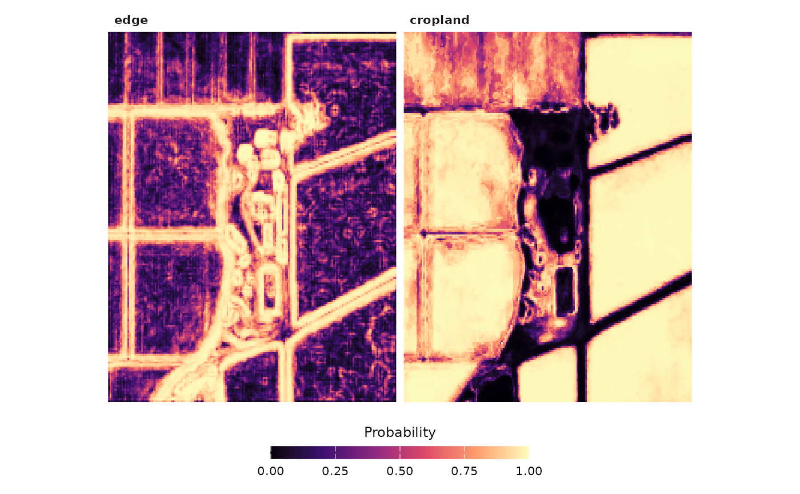

Computes, for every pixel, the edge probability (the maximum over four directions of the edge-model probability of the pixel pair centred on it) and the cropland probability. Large rasters are processed in blocks of rows.
Arguments
- stack
An
fb_stackholding the bands of the model.- model
An
fb_modelfromfb_train()orfb_model_pretrained().- filename
Optional output GeoTIFF.
- block_cells
Approximate number of cells per processing block.
- threads
Number of threads for the cropland model.
Examples
s <- fb_example_stack("california")
maps <- fb_tbc_maps(s, fb_model_pretrained("california"))
fb_plot_maps(maps)
